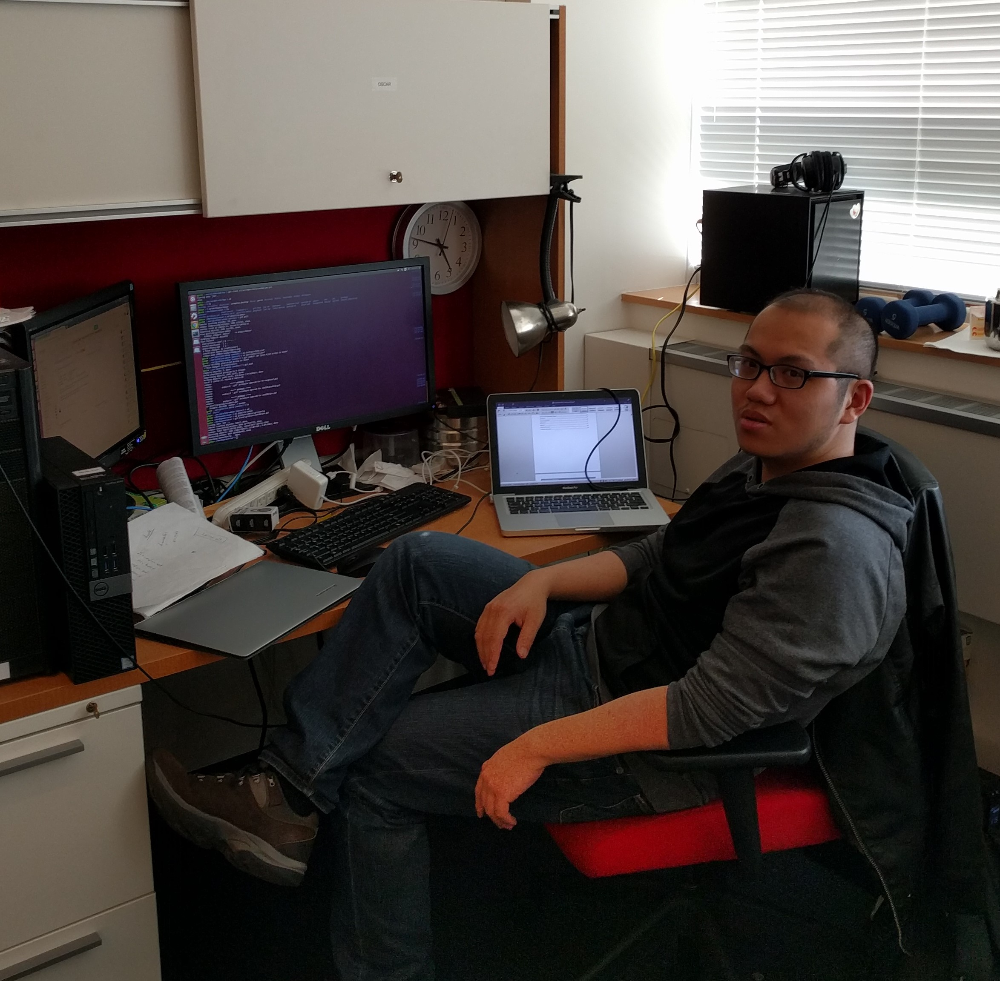

Hi. I'm Chia-Che Tsai.
I am a PhD student graduating in Fall 2017 from Stony Brook University. I am soon joining RISE Lab at UC Berkeley as a postdoc, and becoming a new faculty of the CSE department at Texas A&M University, in Fall 2018.
Born in Taiwan, I devote my life to working on interesting problems. My motto is to be constructive to the world, and be supportive to people around me. Also, I love doing research in computer systems.
Learn about my recent work